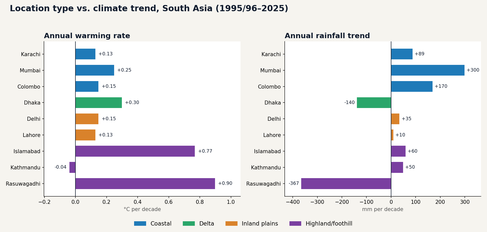

Each city report on this site tells one place's story. This piece steps back and groups all nine locations by setting: coastal, delta, inland plains, and highland or foothill, using only figures already published in the individual reports. It asks whether where a place sits explains how its climate is changing.

The Four Groups
| Group | Locations | Warming (°C/decade) | Rainfall trend (mm/decade) | Extreme heat (≥40°C days/yr) |
|---|---|---|---|---|
| Coastal | Karachi, Mumbai, Colombo | +0.13 to +0.25 | +88.7 to +300 | ~0 to 5 |
| Delta | Dhaka | +0.30 | −140 | ~0 |
| Inland plains | Delhi, Lahore | +0.13 to +0.15 | +10 to +35 | 9 to 52 |
| Highland / foothill | Islamabad, Kathmandu, Rasuwagadhi | −0.04 to +0.90 | −367 to +60 | 0 to 20 |
What the Pattern Shows
1. Coastal cities are all getting wetter
Karachi, Mumbai, and Colombo all show rising annual rainfall, from +88.7mm/decade in Karachi to +300mm/decade in Mumbai. But the character differs: Mumbai's increase is broad and sustained, while Karachi's is driven by a handful of extreme years (see Mumbai vs. Karachi). Their warming rates are moderate and fairly close together.
2. Inland plains: flat rainfall, extreme heat
Delhi and Lahore have the two flattest rainfall trends among the lowland cities (+35 and +10mm/decade) and are the only locations regularly crossing 40°C dozens of days a year (Delhi up to ~52, Lahore up to ~46). Their annual warming rates (+0.15 and +0.13°C/decade) are modest, which is the useful lesson: a modest average trend can coexist with severe extremes, as our Delhi extreme heat report showed.
3. Highlands warm fastest, but not uniformly
Rasuwagadhi (+0.90°C/decade) and Islamabad (+0.77) top the warming-rate ranking, and both show winter as their fastest-warming season. Kathmandu, at similar elevation to the foothill group, is the opposite: essentially flat overall, with two seasons cooling (see why Kathmandu isn't warming). Rainfall in the highlands splits too: Rasuwagadhi has the steepest decline in the series while Islamabad and Kathmandu are rising.
4. The delta is its own case
Dhaka warms faster than every coastal and inland-plains city while its rainfall declines, the only lowland city with that combination. It doesn't fit neatly into either coastal or inland categories, which is why it sits in its own group here.
What This Means
- Average warming is a poor predictor of risk on its own. Delhi and Lahore sit mid-table on warming but lead on extremes.
- "Coastal" describes temperature moderation better than rainfall behavior. The three coastal cities share low extreme heat, but their rainfall regimes differ sharply (see the climate zones reference: desert, tropical monsoon, and tropical rainforest).
- Highland trends need local study. Two neighboring elevation bands in Nepal produce opposite warming stories.
Explore the underlying year-by-year data on the interactive dashboard.
Open the Interactive Dashboard →Related Reports
Climate records · Climate graphs for every city · Dhaka vs. Karachi · South Asia climate trend report
Data Source & Methodology
All figures come from the individual city reports on this site, built on the Open-Meteo Historical Weather API using ERA5 and ERA5-Land reanalysis data (ECMWF, via the Copernicus Climate Change Service), covering 1995/96 through 2025. Trend rates are estimated from linear regression lines on each city's charts. The grouping into coastal, delta, inland plains, and highland is this report's own simplification for comparison.
Frequently Asked Questions
Do coastal cities in South Asia warm slower than inland cities?
Not consistently. In this 9-location dataset, the three coastal cities warm at +0.13 to +0.25°C per decade, similar to the two inland plains cities (+0.13 to +0.15°C per decade). The clearer difference is in extremes: coastal cities see almost no days at or above 40°C, while Delhi and Lahore record up to 52 and 46 such days a year.
Which type of location is getting wetter in South Asia?
All three coastal cities show rising annual rainfall (+88.7 to +300mm per decade), while the two inland plains cities show the flattest trends (+10 to +35mm per decade). Dhaka, a delta city, and Rasuwagadhi, a high-altitude location, are the two exceptions with declining rainfall.
Does higher elevation mean faster warming in South Asia?
Often, but not always. Rasuwagadhi (~1,880m) and Islamabad (foothills) show the fastest warming in this series, but Kathmandu (~1,400m) is the only location with a flat-to-negative trend, so elevation alone doesn't predict the direction.
Is this enough data to draw firm conclusions about coastal versus inland climate?
No. With only 2 to 3 locations per group, the patterns are suggestive rather than conclusive. They describe what this dataset shows, and would need more locations per category to be tested properly.